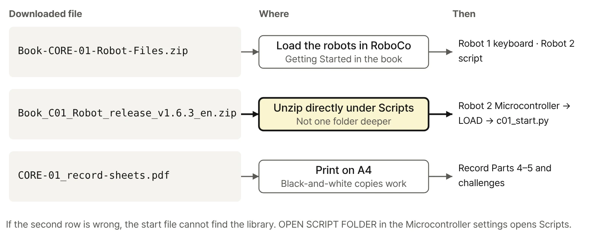
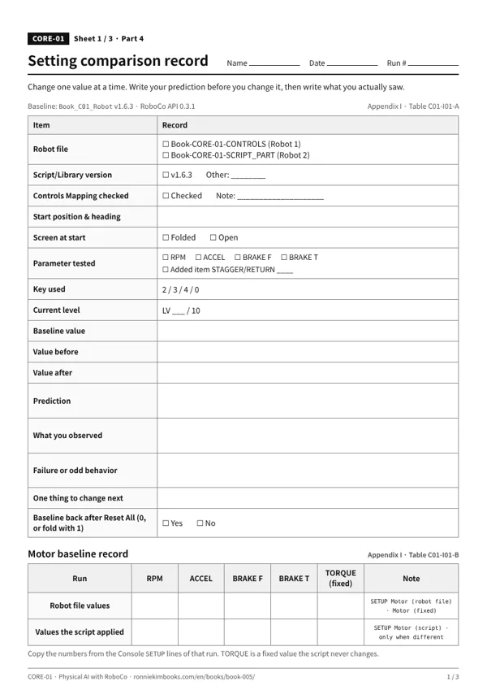
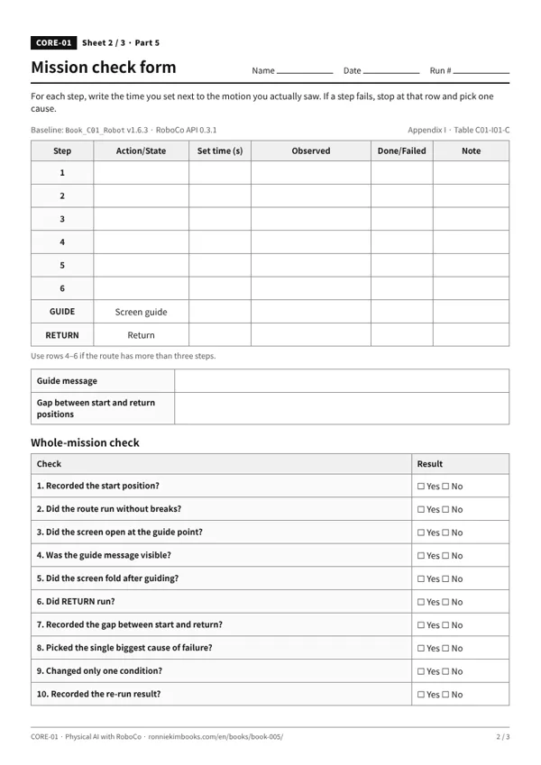
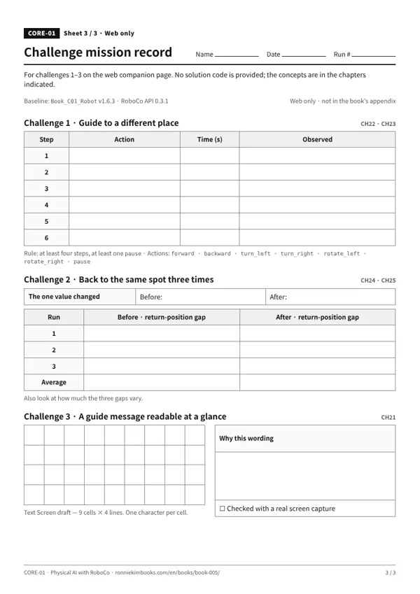
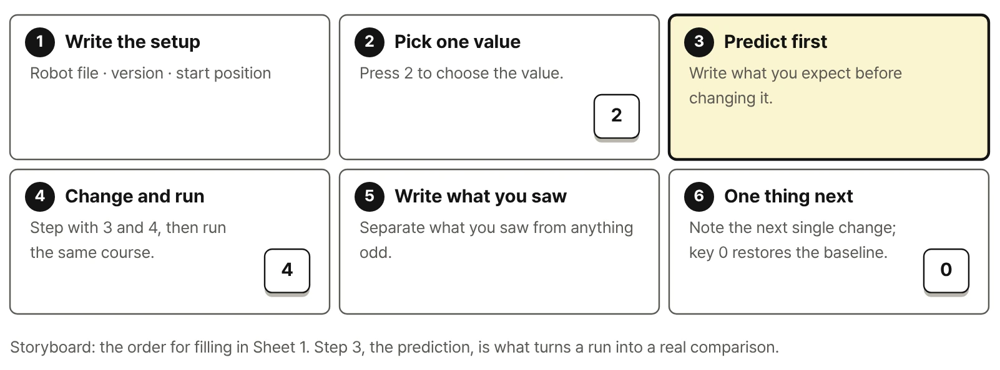

Robot 1 · keyboard driving
Book-CORE-01-CONTROLS · CH01 · CH20
Driven with Controls Mapping alone, no script.
Physical AI with RoboCo · CORE-01 · Digital Package
Digital Package · Book_C01_Robot v1.6.3 · RoboCo API 0.3.1
Two robot files, the start file with its Educational Library, and the record sheets, all in one place. You'll use these files from Chapter 1 through Chapter 25. The book's Getting Started section explains where to put them and how to connect them.

One four-wheel robot with independent drive and steering, set up two ways. Download both in one ZIP, or click a file name below to download it on its own.
Both robot files (ZIP) · 151 KB
Book-CORE-01-CONTROLS · CH01 · CH20
Driven with Controls Mapping alone, no script.

Book-CORE-01-SCRIPT_PART · CH02 – CH25
Connect the start file c01_start.py to its Microcontroller for driving, experiments, and the mission.
Book-CORE-01-SCRIPT. The file here is named Book-CORE-01-SCRIPT_PART, but it's the same robot. If the name changes, we'll note it here and in the errata.Robot 2 runs a single start file, c01_start.py. The C01_Lib folder is the author's Educational Library that the start file calls; it is not part of the official RoboCo API. Appendix E of the book maps where the official API ends and the library begins.
Book_C01_Robot_release_v1.6.3_en.zip · 46 KB
Release 1.6.3, the version that goes with the book, with comments, docstrings, and the README in English.
Scripts/ ← OPEN SCRIPT FOLDER in RoboCo's Microcontroller settings
Book_C01_Robot/
c01_start.py 6 KB — start fileREADME.md 37 KB__init__.pyC01_Lib/ — Educational Library
__init__.py__init__.py 196 Bc01lib_app.py 12 KBc01lib_drive.py 6 KBc01lib_experiment.py 12 KBc01lib_keys.py 3 KBc01lib_led.py 2 KBc01lib_log.py 3 KBc01lib_mission.py 9 KBc01lib_ports.py 5 KBc01lib_robot.py 22 KBc01lib_screen.py 2 KBc01lib_steering.py 8 KBBook_C01_Robot directly under Scripts. If it ends up one folder deeper, the start file can't find the library.Sheets 1 and 2 are print-ready versions of the blank forms in Appendix I of the book; Sheet 3 is a web-only form for the challenge missions. Gray lines keep the cells readable in black-and-white copies.




| Robot files | Book-CORE-01-CONTROLS · Book-CORE-01-SCRIPT_PART2026-09-30 · 151 KB SHA-256 cc3978810bfd9d289208c6b84b155c59fa6ae4b9b9e1aa30c3e19f2fa98d1397 |
|---|---|
| Start file & library (English comments) | Book_C01_Robot release v1.6.32026-10-09 · 46 KB SHA-256 24b30515276a661a21f0966f88971714bbdfc1042ee3105e47dad4695a679b70 |
| Record sheets | CORE-01 record sheets (en) 2026-10-08 · 118 KB SHA-256 d641c030b7de73207ef518ad063b5942f73f0fb382a4377d685466b6b6ca3966 |
| RoboCo API | 0.3.1 |
| Full list | manifest.json · SHA256SUMS.txt |
If screens, logs, or key behavior differ from the book, check versions first. If a RoboCo update breaks compatibility, updated files and notes will appear in Versions & errata.
RoboCo is a game made by Filament Games. These files are not official RoboCo examples or materials; the author created them for this book's exercises. Use and redistribution are governed by the copyright notice in the book.